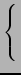
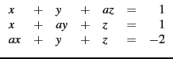

suivant: Réduction des matrices
monter: Outils pour l'Algèbre
précédent: Vecteurs et matrices
Table des matières
Index
Systèmes linéaires
La fonction linsolve résout une liste d'équations
linéaires, avec la même syntaxe que solve. On peut aussi utiliser
simult pour résoudre plusieurs systèmes d'équations linéaires
qui ne diffèrent que par leur second membre, en mettant comme premier
argument la matrice du système et comme second argument la matrice dont la
(ou les) colonnes sont le (ou les) second membre(s) des systèmes, ou bien
rref d'argument une matrice obtenue en bordant la matrice du système
avec lesecond membre (border(A,tran(b)) si b est une matrice
colonne). Quand le système est impossible, linsolve retourne
la liste vide, simult retourne un message d'erreur, rref
retourne une matrice dont une des lignes est nulle, sauf le dernier
coefficient. Quand le système est indéterminé, linsolve
retourne la solution fonction de certaines variables, simult
retourne seulement une solution, rref retourne une matrice dont
une ou plusieurs lignes sont nulles. L'exemple ci-dessous concerne
le système

Il a une solution unique pour a  1 et a - 2, il est impossible pour
a = 1 et il est indéterminé pour a = - 2.
1 et a - 2, il est impossible pour
a = 1 et il est indéterminé pour a = - 2.
linsolve([x+y+a*z=1,x+a*y+z=1,x+a*y+z=-2],[x,y,z])
a:=1
linsolve([x+y+a*z=1,x+a*y+z=1,x+a*y+z=-2],[x,y,z])
a:=-2
linsolve([x+y+a*z=1,x+a*y+z=1,x+a*y+z=-2],[x,y,z])
purge(a)
A:=[[1,1,a],[1,a,1],[a,1,1]]
solve(det(A),a)
A1:=subst(A,a=1)
rank(A1)
image(A1)
ker(A1)
A2:=subst(A,a=-2)
rank(A2)
image(A2)
ker(A2)
b:= [1,1,-2]
B:=tran(b)
simult(A,B)
simult(A1,B)
simult(A2,B)
M:=blockmatrix(1,2,[A,B])
rref(M)
rref(border(A,b))
rref(border(A1,b))
rref(border(A2,b))
| Systèmes linéaires |
linsolve |
résolution d'un système |
simult |
résolution simultanée de plusieurs systèmes |
rref |
réduction de Gauss-Jordan |
rank |
rang |
det |
déterminant du système |
suivant: Réduction des matrices
monter: Outils pour l'Algèbre
précédent: Vecteurs et matrices
Table des matières
Index
Documentation de giac écrite par Renée De Graeve